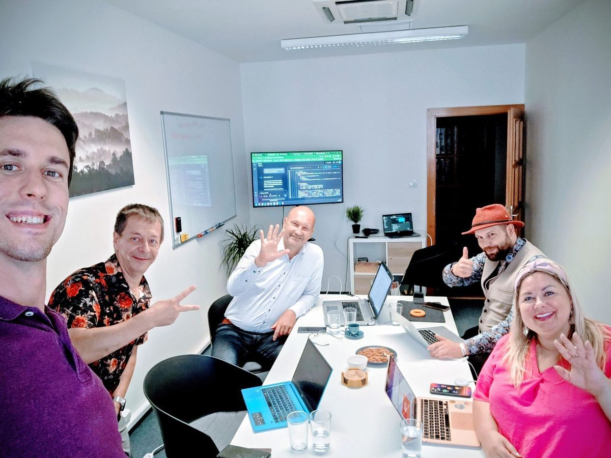

Another AI Workshop is Behind Us! See What We Covered
On Friday, August 22, the workshop focused on the practical use of Google's AI tools took place in our Brno office. A great group of people came together, and the atmosphere was absolutely fantastic. The goal was simple – to bust myths and show how artificial intelligence can genuinely save us hours of work and open up new creative possibilities.

From Theory to Practice in One Morning
We started with the most important thing: we explained that AI is not an all-knowing Google but rather a creative assistant whose outputs need to be verified. We discussed the risks of "hallucinations" and showed why a well-formulated query (prompt) is the foundation of everything.
Then we dove into practice. Participants got to try out how to:
- Use Gemini as a universal AI tool to create content, code simple pages, perform in-depth analyses, and communicate with other Google services.
- Create their own knowledge base in NotebookLM that draws only from uploaded documents (podcasts, books, contracts) and answers without the risk of making things up.
- Connect AI with Google Workspace and have it summarize emails or schedule meetings directly in the calendar.
- Compose an original song in a minute using Suno AI, which we thoroughly enjoyed.
What made me happiest was when participants had that "aha" moment, realizing how a specific tool could be immediately used in their business or personal life. Those moments are why I do this.
What's Next?
The positive feedback has convinced me to continue with the workshop series. This second workshop was a continuation of a great start.
Missed it? No problem! The next date is already set for September 19, 2025. If you want to take your efficiency to the next level and learn to master tools that will give you an edge, don't miss it.
Check out the next workshop ← Back to all articles